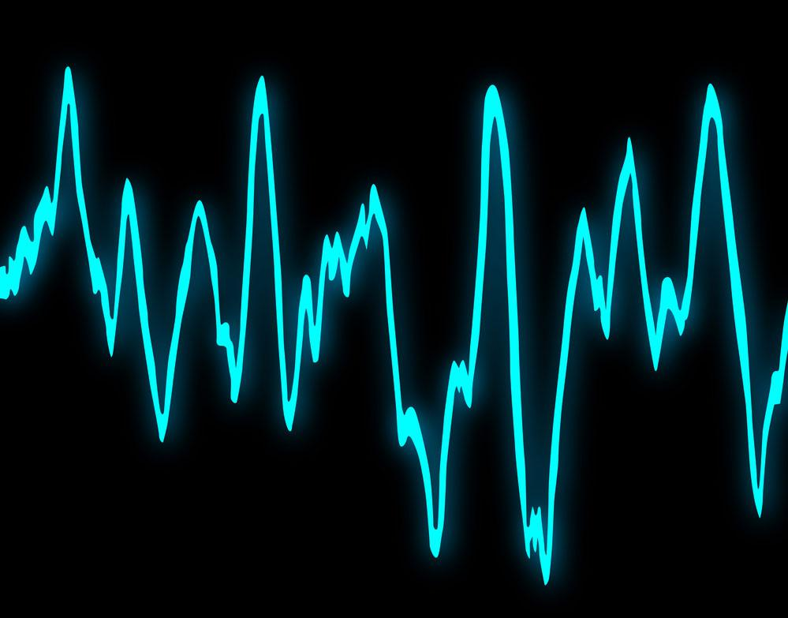
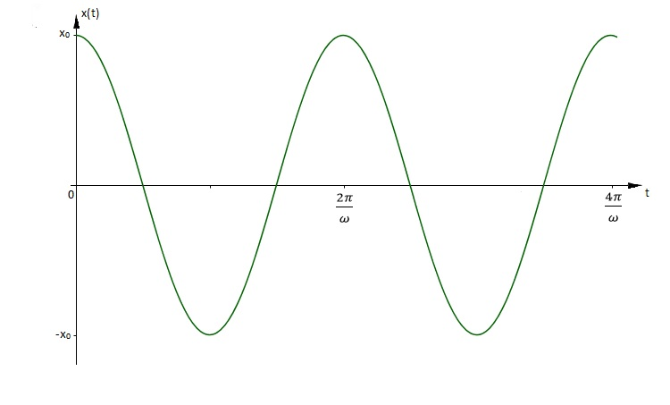
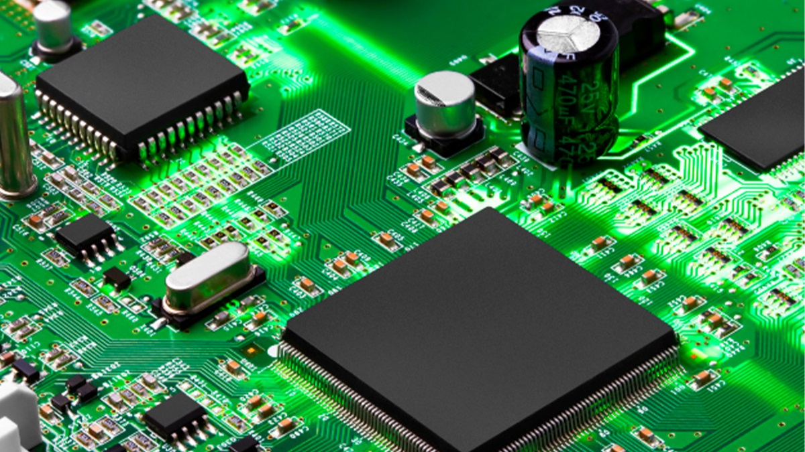

Um oscilador eletrónico (português europeu) ou oscilador eletrônico (português brasileiro), é um circuito eletrónico que produz um sinal electrónico repetitivo, frequentemente uma onda senoidal ou uma onda quadrada, sem a necessidade de aplicação de um sinal externo.
Um oscilador é baseado num circuito amplificador e numa malha de realimentação positiva, que induz a uma instabilidade de operação que resulta na oscilação. Para que o circuito oscilador funcione é preciso que duas condições (de Barkhausen) sejam atendidas:

Oscilador de baixa frequência
Um oscilador de baixa frequência é um oscilador electrónico que gera uma corrente alternada em onda entre 0,1 Hz e 10 Hz. Este termo é tipicamente usado no campo dos sintetizadores de áudio, para o distinguir de um oscilador de frequência áudio.

Oscilador de Audio
Um oscilador de áudio é um oscilador electrónico que gera uma corrente alternada em onda entre 40 Hz e 20 kHz. Essa faixa é usada principalmente nos sintetizadores eletrónicos que simulam sons semelhantes aos produzidos por instrumentos musicais, sendo que o que diferencia os instrumentos entre si são os harmônicos que ele produz e a forma em que se inicia, se mantém e se extingue o som, o início ou "ataque" (também denominado frente de onda) é o início do som tocado, a permanência é o tempo que o sistema produtor de som leva para voltar ao normal desde o início até que não mais se escute o som e o decaimento é a forma adotada pelo sistema para que se restabeleça o equilíbrio energético e se gaste toda a energia armazenada no sistema oscilante seja este couros ou plásticos nos instrumentos de percussão, ou vibrações de aço nos instrumentos de cordas etc. O final longo, ou curto do som ou sinal de áudio analisado, por exemplo, os sons produzidos por instrumentos de percussão como bateria, timbal, bongó são sempre muito fortes no início e de curto tempo de permanência e curtíssimo final. A oscilação audível tem sempre uma frequência fundamental, suas harmónicas e uma outra onda de comando que é chamada de "envolvente" e determina as formas de ataque, e permanência e dentro desta, a velocidade de declinação ou decaimento.
Tipos de Osciladores

Oscilador Hartley
Princípio de funcionamento: Baseado em um circuito LC (indutor-capacitor), onde a realimentação positiva é obtida através de uma tomada no enrolamento de um indutor dividido (ou dois indutores acoplados).
Aplicações: Transmissores de rádio, VHF, UHF.
Oscilador Pierce
Princípio de funcionamento: Variação do oscilador de cristal; usa um cristal de quartzo como elemento ressonante, com uma configuração semelhante a um inversor CMOS.
Estabilidade: Alta estabilidade em frequência.
Aplicações: Relógios digitais, microcontroladores, circuitos de temporização
Oscilador Colpitts
Princípio de funcionamento: Também baseado num circuito LC, mas a realimentação vem de um divisor capacitivo (dois capacitores em série).
Aplicações: Osciladores RF, circuitos de comunicação.
Oscilador Clapp
Princípio de funcionamento: Variante do Colpitts com um capacitor adicional em série com o indutor, para melhorar a estabilidade em frequência.
Frequência de oscilação: Mais estável que o Colpitts tradicional.
Aplicações: Geradores de sinal, medições precisas.
Oscilador Seiler
Princípio de funcionamento: Variante do Colpitts, mas usando um transistor em configuração emissor comum com um indutor para realimentação.
Características: Útil para gerar sinais estáveis em VHF.
Aplicações: Comunicação RF, VHF.
Oscilador Vackar
Princípio de funcionamento: Projeto otimizado para manter amplitude constante em ampla faixa de sintonia.
Características: Ideal para osciladores de frequência variável (VFO), com baixa distorção e variação mínima de amplitude.
Aplicações: Transmissores de rádio de banda larga, equipamentos de medição.
Oscilador por Ponte de Wien
Princípio de funcionamento: Usa uma ponte RC como rede de realimentação; amplificador operacional fornece ganho.
Vantagens: Sinal senoidal puro, boa estabilidade.
Aplicações: Geradores de áudio, testes laboratoriais.
Oscilador de Cristal
Princípio de funcionamento: Usa um cristal de quartzo como elemento ressonante com altíssima Q (fator de qualidade), garantindo frequência estável.
Princípio de funcionamento: Gera sinais digitais com dois níveis distintos (0 e 1). Pode ser implementado com circuitos integrados digitais ou operacionais.
Características: Simples, usado como base para PWM ou sinais digitais.
Aplicações: Relógios digitais, sinais de comando, microcontroladores.
Oscilador de Relaxação
Princípio de funcionamento: Carrega e descarrega um componente (geralmente um capacitor) de forma periódica, criando uma forma de onda não senoidal (geralmente dente-de-serra ou triangular).
Exemplo: Oscilador com temporizador 555.
Aplicações: Temporizadores, geração de rampas, circuitos de controle.
Aplicações: Temporizadores, geração de rampas, circuitos de controle.
Princípio de funcionamento: Não possui estado estável — alterna continuamente entre dois estados. É um tipo de oscilador de relaxação.
Exemplo clássico: Circuito com dois transístores ou um 555 em modo astável.
Aplicações: Pisca-piscas, geração de clock, alarmes.
Oscilador de Bloqueio (Blocking Oscillator)
Princípio de funcionamento: Usa um transformador com realimentação positiva rápida. Um pulso liga um transístor, que rapidamente é desligado por autoindução.
Características: Gera pulsos curtos e intensos.
Aplicações: Fontes chaveadas, conversores DC-DC, circuitos de pulso.